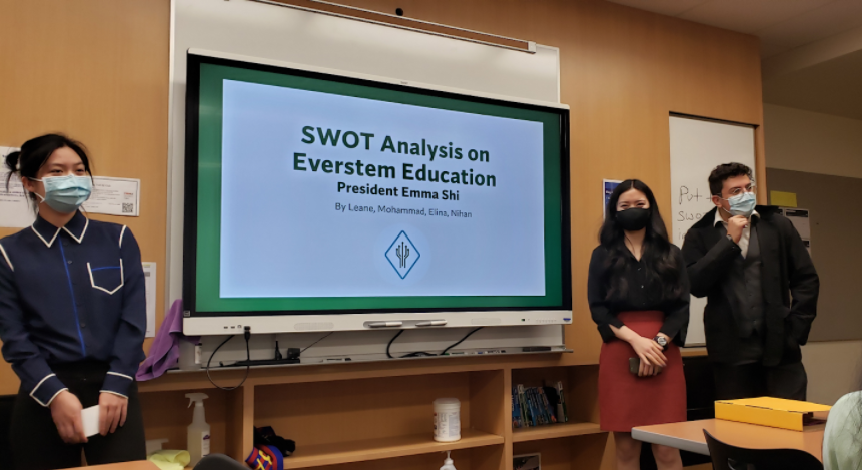
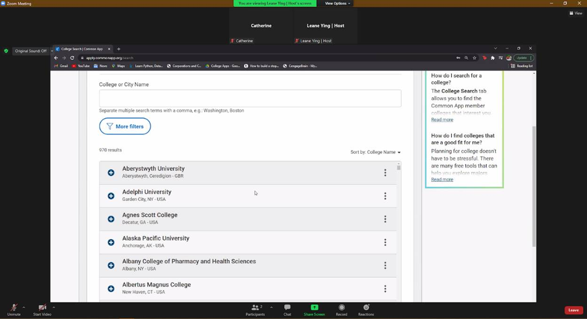

December 2021 Blog Post
2021 Everstem FIRST Rookie FLL and FTC Grant
To support students going into STEM, we are providing a total of $1000 in grants together with FIRST FTC18225 for rookie
FLL and FTC teams to go towards paying their registration fees. Each Rookie team receives $200 grants. Congrats to these teams! If your time has won a grant, be on the lookout for an email from Everstem for more
information.
The winners are:
FTC 18282 Wires2Spark,
FTC 19669 Systematic Chaos,
FTC 19708 The Emerald Bots,
FLL 54281 Cyberwolve,
FLL 54325 Turbocharger

11/2: Business and Marketing Class SWOT Analysis
On November 2nd, students in Tesla STEM High School’s Business and Marketing class presented a SWOT analysis of Everstem
Education to our organization’s leadership.

We will be taking their recommendations of branching out to in-person education (especially since it’s safer now) and different forms of advertisement.

11/4-5 Business/Startup Consulting
On November 4th-5th, students in Tesla STEM High School’s Engineering 3 class presented a Market Research analysis of
Everstem Education to our organization’s leadership. They performed a competitive analysis that compared us to existing
organizations and created a chart that helped visualize it. Some things that differentiated us from others was: our
status as a 501(c)(3) nonprofit, being a student-run organization, having a small student to teacher ratio, and
conducting interactive lessons/activities.
Based on their research, they recommended branching out to more schools and making our name more well known. We will be taking this into consideration for our future workshops as we continue to plan more events.
11/6 2 PM - Connecting with Professionals: Yinhai Wang
On November 4th, we interviewed Yinhai Wang, a transportation engineering professor at the University of Washington who
founded the STAR Lab and serves as the director for Pacific Northwest Transportation Consortium.
Professor Wang discussed AI applications in transportation engineering and how that is used to solve modern problems
today. He discussed the aspects of pedestrian safety and impacts of AI applications. He introduced one of the new
sensors from STAR Lab that they created, called the Mobile Unit for Sensing Traffic (MUST) sensor, which aimed to create
safer and smarter roads. In his presentation, Professor Wang was able to capture advanced ideas and aspects of
transportation that inspired watchers and listeners, an important mindset to have for future people in STEM.

11/21: Connecting with Professionals: Shaw Li
On November 21st, we interviewed Xiaopeng (Shaw) Li, an associate professor at the University of Florida who is
currently the Susan A. Bracken (first holder) Associate Professor in the Department of Civil and Environmental
Engineering and is the director of a USDOT National University Transportation Center, National Institute for Congestion
Reduction.
Professor Li discussed Connected Automated Vehicles and their positive impacts on transportation, such as safety and
being eco-friendly. He introduced many projects that he has worked on, one of them being a test of connected vehicles
sensors inspired by how animals communicate with color. The unique and innovative ideas Professor Li has brought to
light have definitely influenced our audience greatly, opening their eyes to the more creative parts of STEM and
engineering.
November 2021 Blog Post
Hi everyone! This is Everstem Education's first monthly blog post. Every month, we'll share some highlights from the previous month, starting from this past October.
10/5 - Microsoft Outreach
On October 5th, we introduced Everstem and our mission to 70+ Microsoft employees in the Microsoft DevRel GX All-Hands event. We shared our programs, as well as ways they could help students. We concluded the event by giving everyone an opportunity to volunteer for half an hour by doing activities such as sharing their story in STEM (which you can read below!).

All-Hands story from Arthur Yasinski (General Manager, Microsoft Corporation):
I grew up in a hamlet (which is smaller than a village) in northern Alberta in Canada. My nearest neighbors were on an adjacent farm 1/2 mile away, and we only had one TV channel. The primary industries in my area were farming, oil and gas, and forestry. Technology wasn't very prevalent in my daily life, but my favorite subject in school was math. While I thoroughly enjoyed living on a farm, I knew that I wanted to go to post-secondary education, and early on, my dream was to be a lawyer.
That changed during a school trip. I was also part of our school's band program, and while I was in high school, we did a weekend exchange program with another band in a city that was 10 hours away. I ended up sleeping on a sofa bed at the exchange family and noticed that they had a TRS-80 color computer. As intrigued as I was with the device, I didn't want to touch it, so I took advantage of the manuals sitting on the coffee table and spent my evenings (when I was supposed to be sleeping) reading and learning about the computer. I also learned about BASIC.
When I got home to the farm, I convinced my family to help me save for my very own computer. After many chores and months of saving, I had enough to buy a TRS-80 Model III for myself. Each night I would finish my farm work and then my homework and race to the computer to immerse myself in all its wonderment. This was new for me and for everyone around me. It was addicting and gratifying at the same time. Shortly after getting the computer, I realized I was spending upwards of 30 hours on it. I thought to myself, "if I only did another 10 hours per week, this could be my career."
Which is what I ultimately ended up doing. I attended university and obtained my Bachelor of Science in Computing Science. From there, I got a job as a computer-based bookkeeper for a local ice supply company and then as a computer programmer for a scientific research lab, all the while experimenting and playing with the technology beyond what was required of my job. I eventually shared some code on how to integrate Oracle and the internet...before, the internet was a thing, which led me to work for Oracle, and then ultimately for Microsoft. I have been with Microsoft for 24 years, and each day is as unique and challenging as the first.
A career in STEM is like a blank notebook. There are guides and rules, but the story is yours to write. There are endless opportunities to learn, collaborate, and innovate. I am forever grateful for the set of circumstances that introduced me to this career, and I still love what I do decades later.
10/9-10 - College App Walkthrough
On October 9th and 10th, we hosted a free 1-hour college application walkthrough through Zoom. We understand that it's very easy to feel overwhelmed with all the college deadlines, and we wanted to help make the application process more manageable.
Our first day focused on getting started and setting up accounts on the Common App and/or Coalition. On the second day, we went over how to fill out the activities list along with some general tips and tricks. The walkthroughs were conducted one-on-one and were largely discussion-based. This provided us with more flexibility and we were able to better cater our advice to each individual.

10/26 - Experiences as a Researcher and Physicist- Gwynne Crowder
On October 26th, we interviewed Gwynne Crowder, a physics professor at Bellevue College with many accomplishments, including: launching a rocket into space to study hot gases, searching for remnants of life in Antarctica, and studying gravitational waves deep underground.
Professor Crowder discussed the history of gravitational waves and how it has revealed a new perspective on astronomy research. Additionally, she introduced new technologies such as LIGO, which utilizes lasers to detect gravitational waves in outer space. With a personal interest in physics and astronomy among our audience, Professor Crowder was able to inspire many STEM students to pursue this field despite the initial setbacks, an important message to future scientists

FTC 18225 Website with FTC Handbooks
In collaboration with FIRST FTC Team 18225 High Definition, we are providing a beginning handbook for FTC Mechanical Design and Programming, which can be found here:
https://everstem.org/ftc18225/ftc-robot-guide-beginner.htm
https://everstem.org/ftc18225/ftc-programming-guide-beginner.htm

Additionally, High Definition has recently published their website through the Everstem domain, which you can find here: http://ftc18225.everstem.org/.
If you're interested in collaborating with or just connecting with High Definition, you can contact them through the website! If you're a robotics team interested in collaborating with Everstem, contact us at contact@everstem.org!
Be sure to follow our instagram (@ftc18225) for updates on new events! Additionally, if you'd like to submit a story, email it to contact@everstem.org. Thank you!